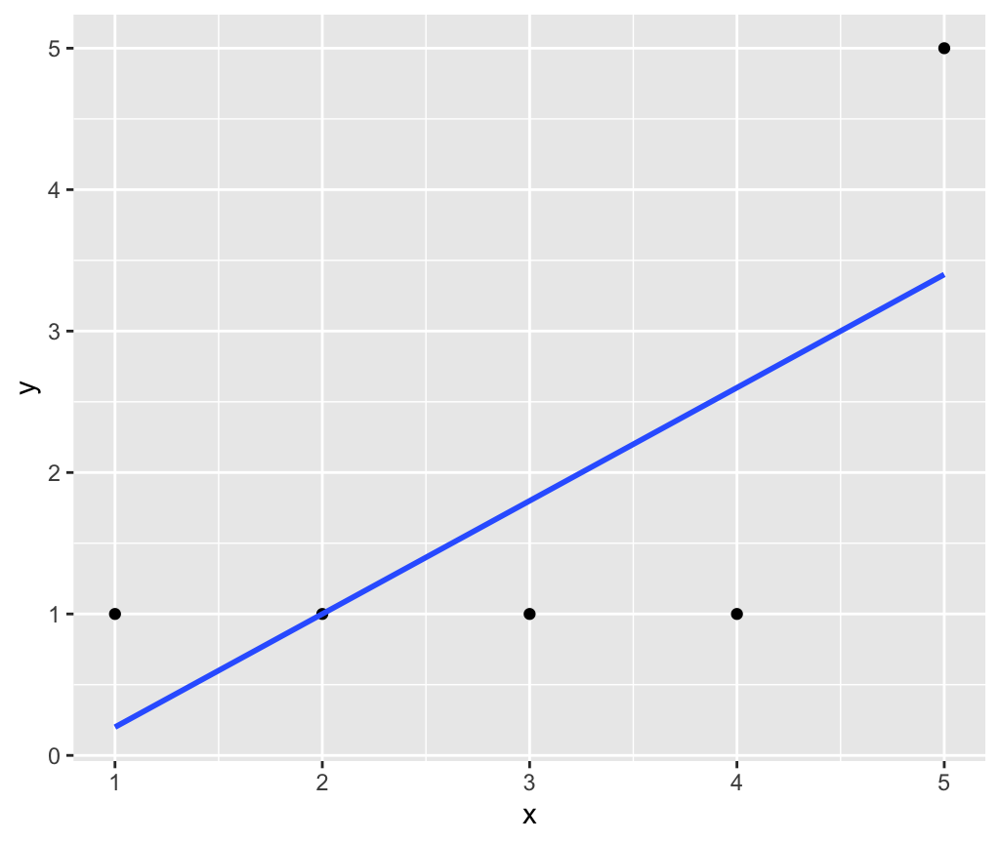
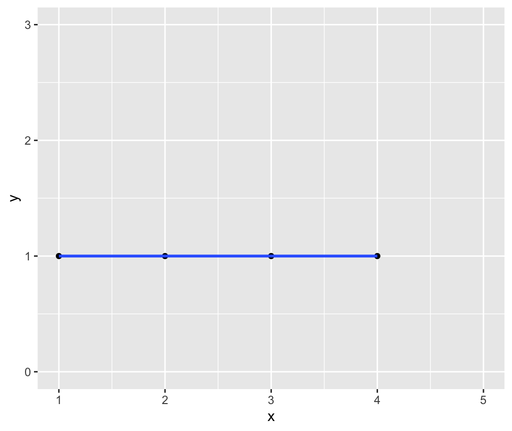
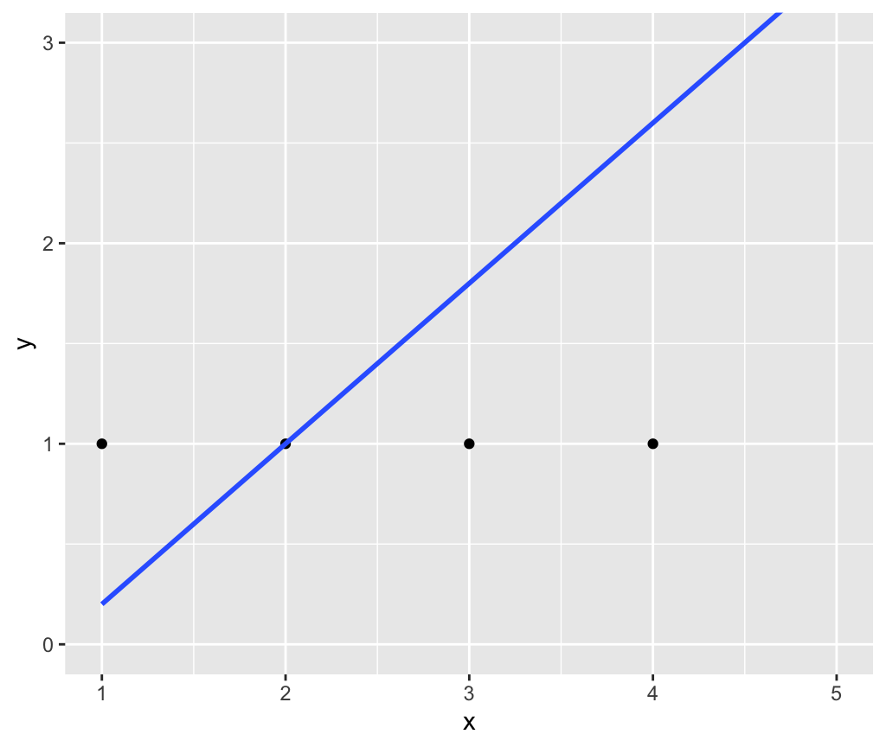

Due Monday 12/6 9pm
For this problem set you will start building a GitHub portfolio of work. You need to complete all steps to receive full credit.
Learning Goal: Edit your public GitHub profile (if you haven’t already). Think of this as a professional profile like a LinkedIn profile. Refer to Sec02 in-class data assistant Marium Tapal’s profile as an example.
Learning Goal: Build your first README. Think of this as a cover page to market your project.
PS07.zip.PS07.zip to your SDS192 folder on your computerPS07.zip. Windows users: be sure to “Extract all”PS07.Rproj icon. For this PS you should always work in “PS07” RStudio Project modeREADME.Rmd to anything you like. In particular look at RStudio menu bar -> Help -> Markdown Quick Reference for markdown formatting tips.
ggplot2 plot)README.Rmd to produce README.md which is your repo’s cover pageDue Monday 11/15 9pm
Getting started:
PS06.zip.PS06.zip to your SDS192 folder on your computerPS06.zip. Windows users: be sure to “Extract all”PS06.Rproj icon. For this PS you sound always work in “PS06” RStudio Project mode (See Lec26 Mon 11/8)Submission:
PS06.pdf file on gradescope. Please use the “Knit to PDF” method directly, instead of “Knit to Word” and then save to PDF method.Due Monday 10/25 9pm
PS05.Rmd.PS05.pdf file on gradescope. Please use the “Knit to PDF” method directly, instead of “Knit to Word” and then save to PDF method.PS05_solutions.Rmd R Markdown “source code”PS05_solutions.pdf PDFSolutions to PS05 Q1.c). What happened to the average age above 60? The hint given on Slack was to look at the ggplot2 cheatsheet -> 2nd page -> Bottom right corner -> “Zooming”
ylim(a, b) sets the limit on the y-axis to be between a to b and “clips” (throws out) any points outside this intervalcoord_cartesian(ylim=c(a, b)) zooms in on the the y-axis to be between a to b but does not “clip” (throw out) the points outside this intervalFor example, consider the following regression line:
library(ggplot2)
library(dplyr)
example <- tibble(
x = c(1, 2, 3, 4, 5),
y = c(1, 1, 1, 1, 5)
)
ggplot(example, aes(x = x, y = y)) +
geom_point() +
geom_smooth(method = "lm", se = FALSE)
Let’s set the y-axis limit to be between 0 and 3. Using ylim(0, 3) clips out the point (5, 5) and thus the regression line is flat:
ggplot(example, aes(x = x, y = y)) +
geom_point() +
geom_smooth(method = "lm", se = FALSE) +
ylim(0, 3)
However, using coord_cartesian(ylim = c(0, 3)) merely zooms in on this part of the y-axis without clipping the point (5, 5) and thus the regression line is the original one:
ggplot(example, aes(x = x, y = y)) +
geom_point() +
geom_smooth(method = "lm", se = FALSE) +
coord_cartesian(ylim = c(0, 3))
Due Monday 10/18 9pm
PS04.Rmd.PS04.pdf file on gradescope. Please use the “Knit to PDF” method directly, instead of “Knit to Word” and then save to PDF method.Due Tuesday 9/28 9pm
PS03.Rmd.PS03.pdf file on gradescope. Please use the “Knit to PDF” method directly, instead of “Knit to Word” and then save to PDF method.Due Monday 9/20 5pm
PS02.Rmd.PS02.pdf file on gradescope. There are two methods to create a PDF:
Due Monday 9/13 5pm